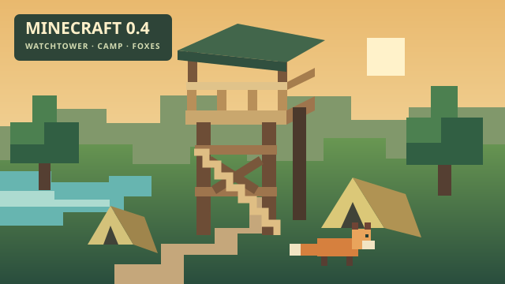
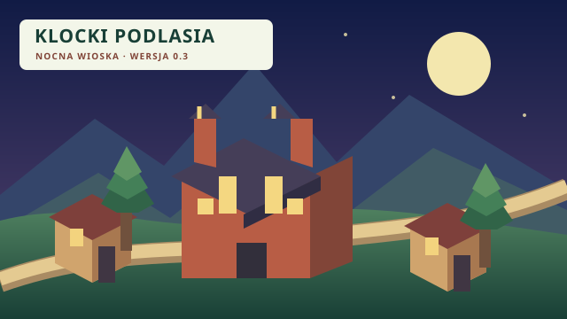
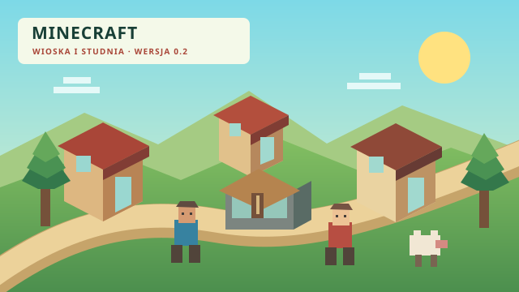
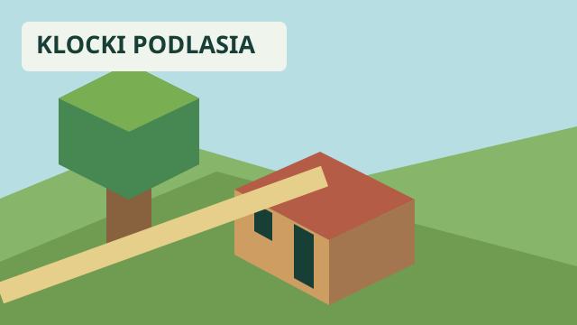

Available now / Już dostępna
-

Minecraft 0.5 Special / Specjalna
Spooky haunted-house special release, based on 0.4 with independent saves. To bring a 0.4 world, export it there and import the backup here.
Specjalne wydanie w klimacie nawiedzonego domu, oparte na 0.4, z osobnymi zapisami. Aby przenieść świat z 0.4, wyeksportuj go tam i zaimportuj kopię tutaj.
Archived versions / Archiwum
-

Minecraft 0.4
Last release before the haunted-house special.
Ostatnia wersja przed specjalnym wydaniem z nawiedzonym domem.
-

Minecraft 0.3
Bright voxel village with saves, backups, music and mobs.
Jasna wioska z bloków, zapisy, kopie zapasowe, muzyka i moby.
-

Minecraft 0.2
First release renamed Minecraft, adding mobs to the sandbox.
Pierwsza wersja pod nazwą Minecraft, z mobami w piaskownicy.
-
